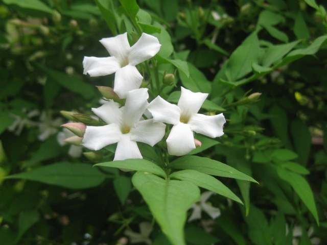
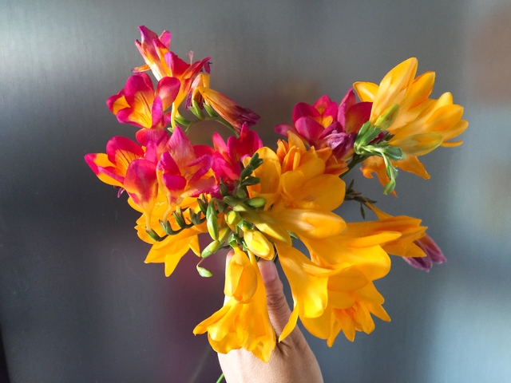
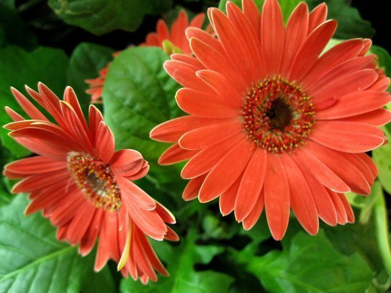

Jazmin (Jasminum)
El género Jasminum, cuyas alrededor de 200 especies reciben el nombre común de jazmín,
son oriundas de las regiones tropicales y subtropicales del Viejo Mundo y ampliamente
cultivadas. Crecen como arbustos y otras como trepadoras sobre otras plantas
o guiadas sobre estructuras.
Plantas de porte arbustivo o trepador perennifolias, caducifolias o semicaducifolias.
Los tallos son cuadrangulares, de color verde o grisáceo, profusamente ramificados.
Hojas dispuestas de forma alterna u opuesta; pueden ser trifoliadas o imparipinnadas.
Las inflorescencias son racimosas, normalmente surgen de las axilas de las hojas.
Las flores, comúnmente blancas –si bien hay algunas especies amarillas y rojizas–,
son hermafroditas. Tienen un cáliz tubular, con cinco pétalos y dos estambres unidos
al tubo de la corola con anteras amarillas. Los frutos son bayas de color negro
al madurar con 1 a 4 semillas.4 La fragancia que exhalan las flores es muy intensa
y se percibe como un aroma dulce.

Fresia (Fressia)
Freesia es un género de plantas bulbosas de la familia Iridaceae. Comprende
aproximadamente 15 especies nativas de África (12 de ellas nativas de la provincia
del Cabo, Sudáfrica), todas ellas con cormos de 1 a 2,5 cm de diámetro. Típicamente
estas especies vegetan durante el invierno, florecen en la primavera y permanecen
en reposo durante la estación cálida.
Son plantas herbáceas, de hojas ensiformes, aplanadas y flores vistosas, fragantes,
dispuestas en espigas unilaterales. Las flores son hermafroditas y ligeramente
irregulares. El perigonio está compuesto de 6 tépalos subiguales entre sí, unidos,
con el tubo perigonial algo curvado y los lóbulos aovados, obtusos. Los estambres
son libres. El ovario es ínfero, trilocular, el estilo es filiforme, dividido en
tres ramas bífidas. El fruto es una cápsula dehiscente por tres valvas. Se le
conoce en algunos sito como la flor de San José o pan con manteca.

Gerbera (Gerbera)
Gerbera, es un género de plantas ornamentales de la familia Asteraceae. Comprende
unas 150 especies descritas y de estas, solo 38 aceptadas.
La flor Gerbera es muy popular y ampliamente usado como planta de jardín o flores de
corte. La Gerbera, es un género de plantas ornamentales originaria de África del
Sur específicamente de la región de Transvaal, también se conoce como margarita
del Transvaal, la gerbera pertenece a la familia de las compuestas Asteraceae. Su
nombre científico es Trangott Gerber, es vivaz, de crecimiento en roseta, cuyo
cultivo puede durar varios años, sin embargo comercialmente solo interesa
cultivarla durante dos o tres, según cultivares y técnicas de cultivo empleadas
ya que después disminuye la productividad.